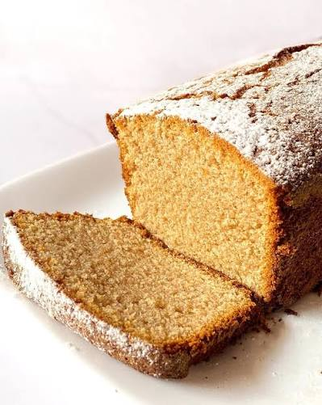

Ingredientes
- 200 g de queso crema
- 160 g de harina integral leudante
- 2 huevos
- 50 g de yogur natural casero
- 2 cucharadas de leche
- 1 cucharadita de vainilla
- 1 limón (ralladura o jugo)
- 50 ml de aceite neutro
- 80 g de azúcar
Paso a Paso
- Batir los huevos con el azúcar solamente hasta integrarlos y que estén un poquito espumosos.
- Agregar el queso crema, el aceite y la vainilla. Mezclá hasta que quede homogéneo.
- Incorporar la harina integral leudante, mezclando lo mínimo indispensable.
- Agregar el yogur y la leche. La masa debería quedar espesa pero cremosa: al levantar la cuchara, tiene que caer lentamente. Si está demasiado compacta, agregá otros 10–20 ml de leche.
- (Opcional) Agregar ralladuras de 1 limón, naranja, chips de chocolate, frutos secos o semillas para dar sabor.
- Dejar reposar 10 minutos antes de llevar al horno para que la harina integral absorba el líquido.
- Precalentar el horno a 170 °C.
- Horneá a 170 °C durante unos 35-45 minutos. Empezar a controlar a los 35 minutos.
Tips
Un detalle importante: no esperes que el palillo salga completamente seco. Si no tiene masa cruda pero salen algunas miguitas húmedas, sacalo. Dejarlo cinco minutitos más por las dudas suele secar los budines integrales.